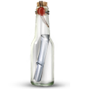

ulak is a simple lightweight notification bar plugin for jquery. it's installation and usage is very easy.
first, include jquery, ulak.js and ulak.css to your page.
<link rel="stylesheet" type="text/css" href="ulak.css" /><script type="text/javascript" src="ulak.js"></script>
and then, execute ulak with options whenever you want!
1 : ulak({"text":"an error occured","type":"error","timeout":2000});
2 : ulak({"text":"success","type":"success","timeout":2000});
3 : ulak({"text":"what are you doing? be careful...","type":"warning","timeout":2000});
4 : ulak({"text":"what information you'll give to people?","type":"info","timeout":2000});
5 : ulak({"text":"an error occured","type":"error","timeout":2000,modal:true});
6 : ulak({"text":"success","type":"success","timeout":2000,modal:true});
7 : ulak({"text":"what are you doing? be careful...","type":"warning","timeout":2000,modal:true});
8 : ulak({"text":"what information you'll give to people?","type":"info","timeout":2000,modal:true});
+ ie7+
+ firefox
+ chrome
+ opera
+ safari
I'm still working on it but modal is already integrated. because next version will come out with modal confirm box. it's not just for confirm box, you can use modal with all the types.
ulak means "messenger" in Turkish.